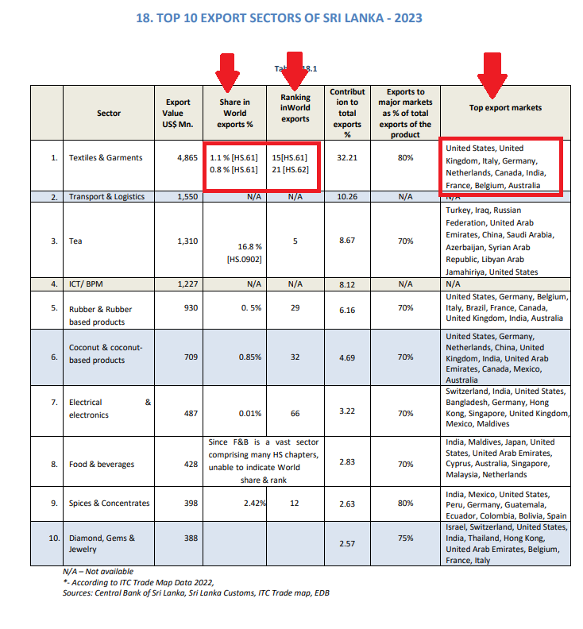
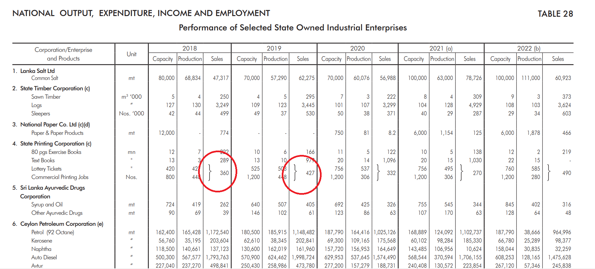
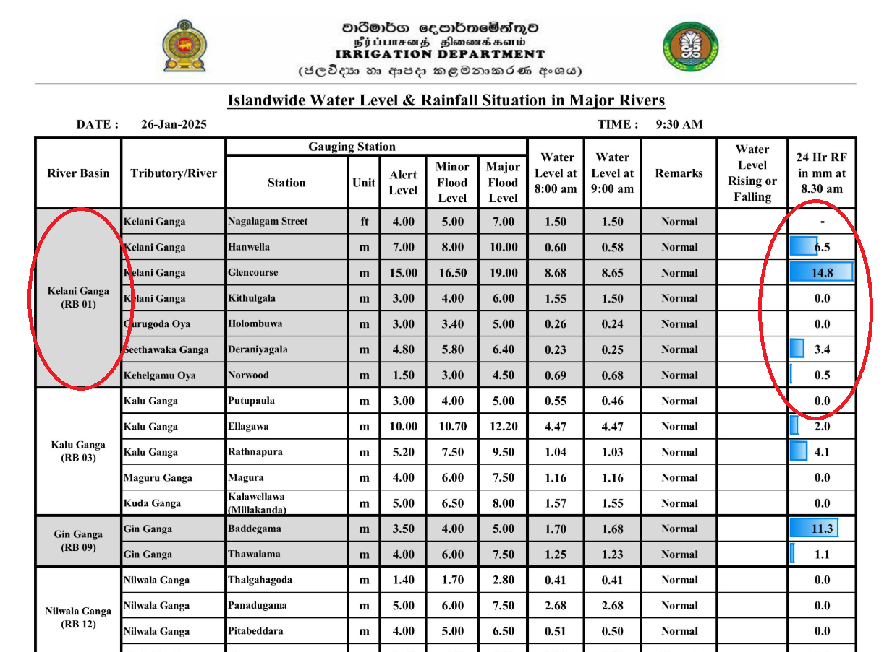
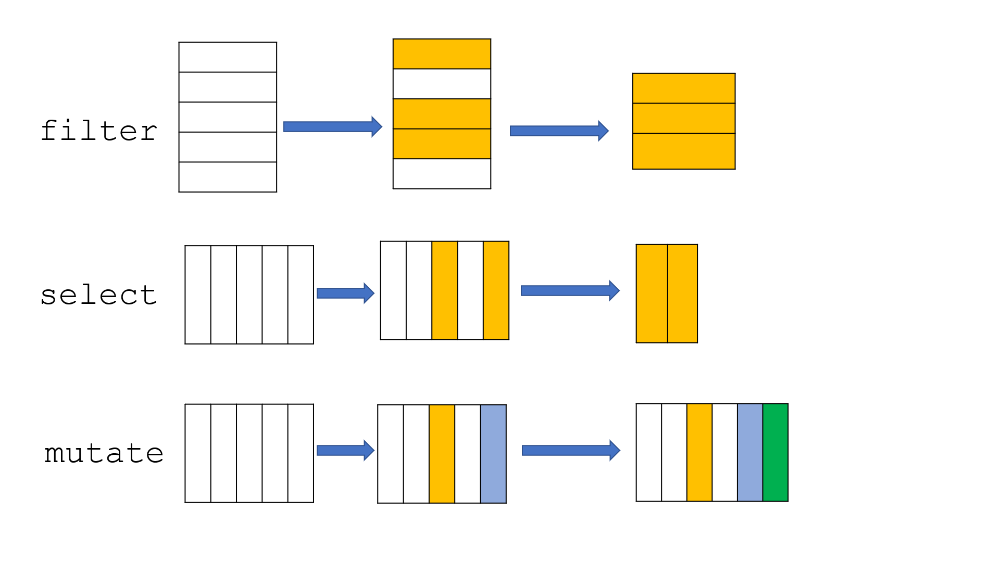
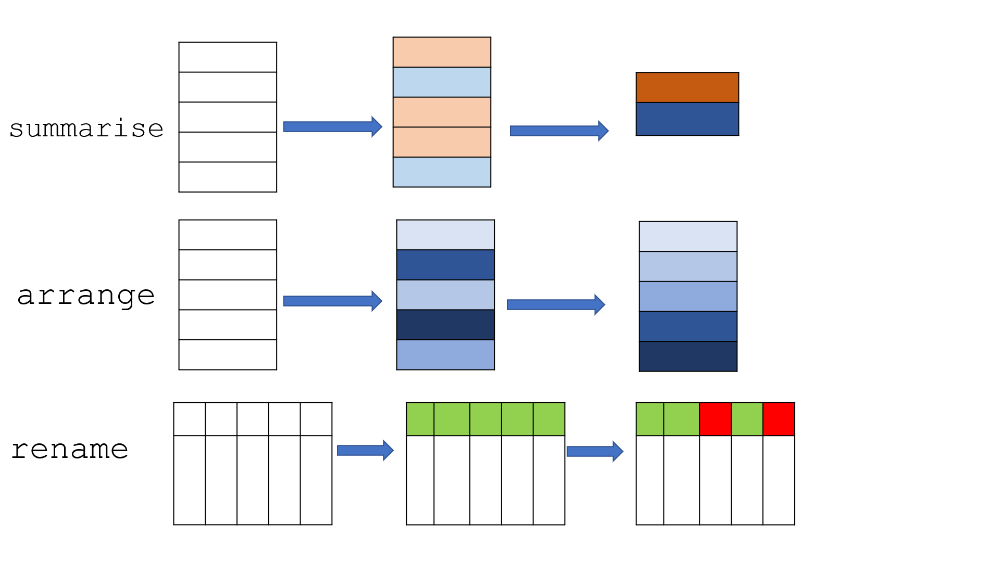
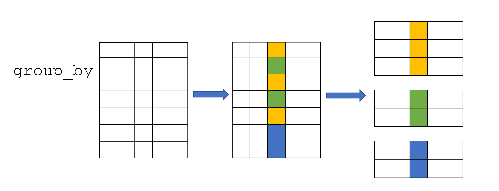

6 Data Wrangling
Data wrangling is the process of transforming and structuring raw data into a structured format to enhance its quality, making it easier to analyze. Data wrangling in the tidyverse workflow generally covers both tidy and transform steps int he tidy workflow.
6.1 Data Tidying
A tidy dataset follows these key principles:
- Each variable is placed in its own column.
- Each observation is placed in its own row.
- Each value is placed in its own cell.
The following examples are taken from published reports by various institutes and contains an untidy data structure. This is a common issue in real-world data. The problematic areas that make the data untidy are highlighted.
- Image Source: Sri Lanka Export Development Board – Export Performance Indicators 2023
In this example, certain cells contain more than one value separated by a comma, making the dataset untidy.
- Image Source: Central Bank of Sri Lanka – Annual Report 2022

In this example, certain cells are merged and presented as a common value using curly braces. This format makes the data untidy and difficult to analyze.
- Image Source: Disaster Management Centre, Ministry of Defense – River Water Level and Flood Warning Report

In this dataset, each cell in the last column contains both a value and a graphical representation, making the data untidy.
The tidy step in the tidy workflow ensures that the data adheres to the tidy principles of tidy data.
The tidyr package helps you structure data in a tidy format. This often involves:
- Pivoting:
pivot_longer()andpivot_wider() - Separating or uniting columns:
separate()andunite()
For more details on its functionalities, refer to the tidyr package documentation: https://tidyr.tidyverse.org/.
A well-organized dataset saves time and ensures accurate results!
6.2 Data Transformation
After tidying up the data, when you start analyzing it, especially with secondary data, it may not always be in the exact form you need. Sometimes, you may need to add new variables using data from other variables. Other times, you may need to filter specific rows or columns from the original dataset. You might also need to summarize the data or rename the columns properly.
This is where the data transformation step comes in.
The dplyr package provides powerful tools to transform your data into the desired format. Some of the most commonly used functions in dplyr include:
filter()– Select specific rows based on conditionsselect()– Choose specific columnsmutate()– Create or modify columnssummarise()– Calculate summary statisticsarrange()– Sort rows by a columngroup_by()– Group data for grouped operationsrename()– Change column names
By performing these tasks, you change the structure of the original dataset as demontrated below, which is why it’s called the data transformation step.



6.2.1 Example
Let’s consider the following dataset whihc contains synthetic airline data.
Download the dataset: airline_data.csv Data Source: https://www.kaggle.com/datasets/iamsouravbanerjee/airline-dataset/data
library(tidyverse)── Attaching core tidyverse packages ──────────────────────── tidyverse 2.0.0 ──
✔ dplyr 1.1.4 ✔ readr 2.1.5
✔ forcats 1.0.0 ✔ stringr 1.5.1
✔ ggplot2 3.5.1 ✔ tibble 3.2.1
✔ lubridate 1.9.3 ✔ tidyr 1.3.1
✔ purrr 1.0.2
── Conflicts ────────────────────────────────────────── tidyverse_conflicts() ──
✖ dplyr::filter() masks stats::filter()
✖ dplyr::lag() masks stats::lag()
ℹ Use the conflicted package (<http://conflicted.r-lib.org/>) to force all conflicts to become errorsdata <- read_csv(here::here("data", "airline_data.csv"))Rows: 98619 Columns: 15
── Column specification ────────────────────────────────────────────────────────
Delimiter: ","
chr (14): Passenger ID, First Name, Last Name, Gender, Nationality, Airport ...
dbl (1): Age
ℹ Use `spec()` to retrieve the full column specification for this data.
ℹ Specify the column types or set `show_col_types = FALSE` to quiet this message.dim(data)[1] 98619 15colnames(data) [1] "Passenger ID" "First Name" "Last Name"
[4] "Gender" "Age" "Nationality"
[7] "Airport Name" "Airport Country Code" "Country Name"
[10] "Airport Continent" "Continents" "Departure Date"
[13] "Arrival Airport" "Pilot Name" "Flight Status" Dataset Glossary (Column-wise)
Passenger ID - Unique identifier for each passenger
First Name - First name of the passenger
Last Name - Last name of the passenger
Gender - Gender of the passenger
Age - Age of the passenger
Nationality - Nationality of the passenger
Airport Name - Name of the airport where the passenger boarded
Airport Country Code - Country code of the airport’s location
Country Name - Name of the country the airport is located in
Airport Continent - Continent where the airport is situated
Continents - Continents involved in the flight route
Departure Date - Date when the flight departed
Arrival Airport - Destination airport of the flight
Pilot Name - Name of the pilot operating the flight
Flight Status - Current status of the flight (e.g., on-time, delayed, canceled)
This synthetic dataset covers global airline operations. This dataset is useful for economists because it provides information on passenger travel patterns, flight routes, and airport locations. It helps analyze how air travel affects trade, tourism, and jobs. By looking at flight status and passenger details, economists can study the impact of aviation on the economy and make decisions about transportation policies and infrastructure development.
data <- data |> as_tibble()
head(data)# A tibble: 6 × 15
`Passenger ID` `First Name` `Last Name` Gender Age Nationality
<chr> <chr> <chr> <chr> <dbl> <chr>
1 ABVWIg Edithe Leggis Female 62 Japan
2 jkXXAX Elwood Catt Male 62 Nicaragua
3 CdUz2g Darby Felgate Male 67 Russia
4 BRS38V Dominica Pyle Female 71 China
5 9kvTLo Bay Pencost Male 21 China
6 nMJKVh Lora Durbann Female 55 Brazil
# ℹ 9 more variables: `Airport Name` <chr>, `Airport Country Code` <chr>,
# `Country Name` <chr>, `Airport Continent` <chr>, Continents <chr>,
# `Departure Date` <chr>, `Arrival Airport` <chr>, `Pilot Name` <chr>,
# `Flight Status` <chr>summary(data) Passenger ID First Name Last Name Gender
Length:98619 Length:98619 Length:98619 Length:98619
Class :character Class :character Class :character Class :character
Mode :character Mode :character Mode :character Mode :character
Age Nationality Airport Name Airport Country Code
Min. : 1.0 Length:98619 Length:98619 Length:98619
1st Qu.:23.0 Class :character Class :character Class :character
Median :46.0 Mode :character Mode :character Mode :character
Mean :45.5
3rd Qu.:68.0
Max. :90.0
Country Name Airport Continent Continents Departure Date
Length:98619 Length:98619 Length:98619 Length:98619
Class :character Class :character Class :character Class :character
Mode :character Mode :character Mode :character Mode :character
Arrival Airport Pilot Name Flight Status
Length:98619 Length:98619 Length:98619
Class :character Class :character Class :character
Mode :character Mode :character Mode :character
6.2.1.1 filter: Select specific rows based on conditions
- Takes logical expressions and returns the rows for which all are
TRUE.
filter(data, Age > 45)# A tibble: 49,383 × 15
`Passenger ID` `First Name` `Last Name` Gender Age Nationality
<chr> <chr> <chr> <chr> <dbl> <chr>
1 ABVWIg Edithe Leggis Female 62 Japan
2 jkXXAX Elwood Catt Male 62 Nicaragua
3 CdUz2g Darby Felgate Male 67 Russia
4 BRS38V Dominica Pyle Female 71 China
5 nMJKVh Lora Durbann Female 55 Brazil
6 8IPFPE Rand Bram Male 73 Ivory Coast
7 sBf524 Briant De La Haye Male 71 Russia
8 PlwJZT Kalie Scoble Female 47 Sweden
9 iU75x3 Catriona Beaument Female 77 Russia
10 e0H5LI Jerrine Peeters Female 87 Philippines
# ℹ 49,373 more rows
# ℹ 9 more variables: `Airport Name` <chr>, `Airport Country Code` <chr>,
# `Country Name` <chr>, `Airport Continent` <chr>, Continents <chr>,
# `Departure Date` <chr>, `Arrival Airport` <chr>, `Pilot Name` <chr>,
# `Flight Status` <chr>filter(data, Nationality == "Sri Lanka")# A tibble: 138 × 15
`Passenger ID` `First Name` `Last Name` Gender Age Nationality
<chr> <chr> <chr> <chr> <dbl> <chr>
1 fhD57Z Jordan Fierman Female 11 Sri Lanka
2 5joYmi Valdemar Marcone Male 7 Sri Lanka
3 2ROpnA Jordon Sallowaye Male 43 Sri Lanka
4 eKkekT Dael Edlestone Female 58 Sri Lanka
5 5TxM24 Hiram Memory Male 21 Sri Lanka
6 wQVX9G Sherm Kippie Male 60 Sri Lanka
7 fKtiLJ Filippa Prestige Female 53 Sri Lanka
8 q7uPji Wainwright Dunkerton Male 47 Sri Lanka
9 Tn9LGe Matty Alflat Male 6 Sri Lanka
10 fZsoAD Rowney Messitt Male 43 Sri Lanka
# ℹ 128 more rows
# ℹ 9 more variables: `Airport Name` <chr>, `Airport Country Code` <chr>,
# `Country Name` <chr>, `Airport Continent` <chr>, Continents <chr>,
# `Departure Date` <chr>, `Arrival Airport` <chr>, `Pilot Name` <chr>,
# `Flight Status` <chr>6.2.1.2 select: Choose specific columns by their names.
select(data, `Passenger ID`:Gender)# A tibble: 98,619 × 4
`Passenger ID` `First Name` `Last Name` Gender
<chr> <chr> <chr> <chr>
1 ABVWIg Edithe Leggis Female
2 jkXXAX Elwood Catt Male
3 CdUz2g Darby Felgate Male
4 BRS38V Dominica Pyle Female
5 9kvTLo Bay Pencost Male
6 nMJKVh Lora Durbann Female
7 8IPFPE Rand Bram Male
8 pqixbY Perceval Dallosso Male
9 QNAs2R Aleda Pigram Female
10 3jmudz Burlie Schustl Male
# ℹ 98,609 more rowsselect(data, `Pilot Name`, `Flight Status`)# A tibble: 98,619 × 2
`Pilot Name` `Flight Status`
<chr> <chr>
1 Fransisco Hazeldine On Time
2 Marla Parsonage On Time
3 Rhonda Amber On Time
4 Kacie Commucci Delayed
5 Ebonee Tree On Time
6 Inglis Dolley On Time
7 Stanislas Tiffin Cancelled
8 Sharyl Eastmead Cancelled
9 Daryn Bardsley On Time
10 Alameda Carlyle On Time
# ℹ 98,609 more rowsWhen you pass a vector of column names with -c(), it omits the specified columns and returns the dataframe with the remaining columns. This option is very useful when working with large datasets that have many columns, and you only need to remove a few columns to finalize the dataset.
select(data, -c(`Passenger ID`, `First Name`, `Last Name`))# A tibble: 98,619 × 12
Gender Age Nationality `Airport Name` `Airport Country Code` `Country Name`
<chr> <dbl> <chr> <chr> <chr> <chr>
1 Female 62 Japan Coldfoot Airp… US United States
2 Male 62 Nicaragua Kugluktuk Air… CA Canada
3 Male 67 Russia Grenoble-Isèr… FR France
4 Female 71 China Ottawa / Gati… CA Canada
5 Male 21 China Gillespie Fie… US United States
6 Female 55 Brazil Coronel Horác… BR Brazil
7 Male 73 Ivory Coast Duxford Aerod… GB United Kingdom
8 Male 36 Vietnam Maestro Wilso… BR Brazil
9 Female 35 Palestinia… Venice Marco … IT Italy
10 Male 13 Thailand Vermilion Air… CA Canada
# ℹ 98,609 more rows
# ℹ 6 more variables: `Airport Continent` <chr>, Continents <chr>,
# `Departure Date` <chr>, `Arrival Airport` <chr>, `Pilot Name` <chr>,
# `Flight Status` <chr>6.2.1.3 mutate: Create or modify columns
- This function allows you to creates new variables from an existing variable.
data_new <- data |> mutate(New_Age = Age + 2)
data_new# A tibble: 98,619 × 16
`Passenger ID` `First Name` `Last Name` Gender Age Nationality
<chr> <chr> <chr> <chr> <dbl> <chr>
1 ABVWIg Edithe Leggis Female 62 Japan
2 jkXXAX Elwood Catt Male 62 Nicaragua
3 CdUz2g Darby Felgate Male 67 Russia
4 BRS38V Dominica Pyle Female 71 China
5 9kvTLo Bay Pencost Male 21 China
6 nMJKVh Lora Durbann Female 55 Brazil
7 8IPFPE Rand Bram Male 73 Ivory Coast
8 pqixbY Perceval Dallosso Male 36 Vietnam
9 QNAs2R Aleda Pigram Female 35 Palestinian Territory
10 3jmudz Burlie Schustl Male 13 Thailand
# ℹ 98,609 more rows
# ℹ 10 more variables: `Airport Name` <chr>, `Airport Country Code` <chr>,
# `Country Name` <chr>, `Airport Continent` <chr>, Continents <chr>,
# `Departure Date` <chr>, `Arrival Airport` <chr>, `Pilot Name` <chr>,
# `Flight Status` <chr>, New_Age <dbl>colnames(data_new) [1] "Passenger ID" "First Name" "Last Name"
[4] "Gender" "Age" "Nationality"
[7] "Airport Name" "Airport Country Code" "Country Name"
[10] "Airport Continent" "Continents" "Departure Date"
[13] "Arrival Airport" "Pilot Name" "Flight Status"
[16] "New_Age" - The same mutate function also allows you to update an existing variables.
data_new <- data |> mutate(`Departure Date` =as.Date(`Departure Date`, format = "%m/%d/%Y"))
summary(data_new) Passenger ID First Name Last Name Gender
Length:98619 Length:98619 Length:98619 Length:98619
Class :character Class :character Class :character Class :character
Mode :character Mode :character Mode :character Mode :character
Age Nationality Airport Name Airport Country Code
Min. : 1.0 Length:98619 Length:98619 Length:98619
1st Qu.:23.0 Class :character Class :character Class :character
Median :46.0 Mode :character Mode :character Mode :character
Mean :45.5
3rd Qu.:68.0
Max. :90.0
Country Name Airport Continent Continents Departure Date
Length:98619 Length:98619 Length:98619 Min. :2022-01-01
Class :character Class :character Class :character 1st Qu.:2022-04-01
Mode :character Mode :character Mode :character Median :2022-07-01
Mean :2022-07-01
3rd Qu.:2022-09-30
Max. :2022-12-30
Arrival Airport Pilot Name Flight Status
Length:98619 Length:98619 Length:98619
Class :character Class :character Class :character
Mode :character Mode :character Mode :character
6.2.1.4 summarise(British) or summarize (US) : Calculate summary statistics
- this function collapses many values down to a single summary.
data_new |>
summarise(
Departure_Date_start =min(`Departure Date`),
Departure_Date_end =max(`Departure Date`),
Age_median=median(Age),
Age_mean=mean(Age))# A tibble: 1 × 4
Departure_Date_start Departure_Date_end Age_median Age_mean
<date> <date> <dbl> <dbl>
1 2022-01-01 2022-12-30 46 45.5Since it contains missing values, they should be removed before calculating the summary statistics
data_new |>
summarise(
Departure_Date_start =min(`Departure Date`, na.rm = TRUE),
Departure_Date_end =max(`Departure Date`, na.rm = TRUE),
Age_median=median(Age, na.rm = TRUE),
Age_mean=mean(Age, na.rm = TRUE))# A tibble: 1 × 4
Departure_Date_start Departure_Date_end Age_median Age_mean
<date> <date> <dbl> <dbl>
1 2022-01-01 2022-12-30 46 45.56.2.1.5 arrange() – Sort rows by a column
arrange(data, desc(Age))# A tibble: 98,619 × 15
`Passenger ID` `First Name` `Last Name` Gender Age Nationality
<chr> <chr> <chr> <chr> <dbl> <chr>
1 to75jW Pamella Eaden Female 90 Indonesia
2 Zlsjqw Sydney MacGhee Male 90 Guatemala
3 aogYWd Vernen Ivakhnov Male 90 China
4 X0basI Mariann Moogan Female 90 Philippines
5 N7DLfQ Jermaine Escott Male 90 Portugal
6 fZhPqR Valdemar Whate Male 90 Brazil
7 usnzLP Raul Mantha Male 90 Argentina
8 L49UDI Neall Zamudio Male 90 Czech Republic
9 L1ZBXS Anthea Blodget Female 90 Indonesia
10 CjAY9o Valene Megarry Female 90 Indonesia
# ℹ 98,609 more rows
# ℹ 9 more variables: `Airport Name` <chr>, `Airport Country Code` <chr>,
# `Country Name` <chr>, `Airport Continent` <chr>, Continents <chr>,
# `Departure Date` <chr>, `Arrival Airport` <chr>, `Pilot Name` <chr>,
# `Flight Status` <chr>6.2.1.6 group_by() – Group data for grouped operations
- This fucntion takes an existing tibble and converts it into a grouped tibble where operations are performed “by group”. ungroup() removes grouping.
customers_grouped <- data |> group_by(Continents )
customers_grouped# A tibble: 98,619 × 15
# Groups: Continents [6]
`Passenger ID` `First Name` `Last Name` Gender Age Nationality
<chr> <chr> <chr> <chr> <dbl> <chr>
1 ABVWIg Edithe Leggis Female 62 Japan
2 jkXXAX Elwood Catt Male 62 Nicaragua
3 CdUz2g Darby Felgate Male 67 Russia
4 BRS38V Dominica Pyle Female 71 China
5 9kvTLo Bay Pencost Male 21 China
6 nMJKVh Lora Durbann Female 55 Brazil
7 8IPFPE Rand Bram Male 73 Ivory Coast
8 pqixbY Perceval Dallosso Male 36 Vietnam
9 QNAs2R Aleda Pigram Female 35 Palestinian Territory
10 3jmudz Burlie Schustl Male 13 Thailand
# ℹ 98,609 more rows
# ℹ 9 more variables: `Airport Name` <chr>, `Airport Country Code` <chr>,
# `Country Name` <chr>, `Airport Continent` <chr>, Continents <chr>,
# `Departure Date` <chr>, `Arrival Airport` <chr>, `Pilot Name` <chr>,
# `Flight Status` <chr>data |> summarise(age_mean=mean(Age, na.rm=TRUE))# A tibble: 1 × 1
age_mean
<dbl>
1 45.5customers_grouped |> summarise(age_mean=mean(Age, na.rm=TRUE))# A tibble: 6 × 2
Continents age_mean
<chr> <dbl>
1 Africa 45.6
2 Asia 45.7
3 Europe 45.2
4 North America 45.6
5 Oceania 45.4
6 South America 45.46.2.1.7 rename() – Change column names
data <- rename(data, Passenger_ID = `Passenger ID`,
Airport_code = `Airport Country Code` ) # new_name = old_name
data# A tibble: 98,619 × 15
Passenger_ID `First Name` `Last Name` Gender Age Nationality `Airport Name`
<chr> <chr> <chr> <chr> <dbl> <chr> <chr>
1 ABVWIg Edithe Leggis Female 62 Japan Coldfoot Airp…
2 jkXXAX Elwood Catt Male 62 Nicaragua Kugluktuk Air…
3 CdUz2g Darby Felgate Male 67 Russia Grenoble-Isèr…
4 BRS38V Dominica Pyle Female 71 China Ottawa / Gati…
5 9kvTLo Bay Pencost Male 21 China Gillespie Fie…
6 nMJKVh Lora Durbann Female 55 Brazil Coronel Horác…
7 8IPFPE Rand Bram Male 73 Ivory Coast Duxford Aerod…
8 pqixbY Perceval Dallosso Male 36 Vietnam Maestro Wilso…
9 QNAs2R Aleda Pigram Female 35 Palestinia… Venice Marco …
10 3jmudz Burlie Schustl Male 13 Thailand Vermilion Air…
# ℹ 98,609 more rows
# ℹ 8 more variables: Airport_code <chr>, `Country Name` <chr>,
# `Airport Continent` <chr>, Continents <chr>, `Departure Date` <chr>,
# `Arrival Airport` <chr>, `Pilot Name` <chr>, `Flight Status` <chr>6.2.1.8 Combine multiple operations
You can even combine multiple verbs at once to obtain the dataset in the desired structure. This is where the pipe operator becomes very handy.
data |>
filter(Nationality == "Sri Lanka") |>
head(2)# A tibble: 2 × 15
Passenger_ID `First Name` `Last Name` Gender Age Nationality `Airport Name`
<chr> <chr> <chr> <chr> <dbl> <chr> <chr>
1 fhD57Z Jordan Fierman Female 11 Sri Lanka Yoshkar-Ola Ai…
2 5joYmi Valdemar Marcone Male 7 Sri Lanka Mungeranie Air…
# ℹ 8 more variables: Airport_code <chr>, `Country Name` <chr>,
# `Airport Continent` <chr>, Continents <chr>, `Departure Date` <chr>,
# `Arrival Airport` <chr>, `Pilot Name` <chr>, `Flight Status` <chr>data |>
filter(Nationality == "Sri Lanka") |>
summarise(Age_mean=mean(Age, na.rm=TRUE))# A tibble: 1 × 1
Age_mean
<dbl>
1 43.9data_new |>
filter(Nationality == "Sri Lanka") |>
group_by(Gender) |>
filter(Age > 45) |>
arrange(desc(`Departure Date`))# A tibble: 65 × 15
# Groups: Gender [2]
`Passenger ID` `First Name` `Last Name` Gender Age Nationality
<chr> <chr> <chr> <chr> <dbl> <chr>
1 Garp7s Elwood Seczyk Male 61 Sri Lanka
2 bmMaNv Mellie Werrett Female 76 Sri Lanka
3 W9kjm9 Lewes Gollard Male 75 Sri Lanka
4 C5sSaq Jose Duffit Male 87 Sri Lanka
5 YpH6kH Xenos McEntagart Male 71 Sri Lanka
6 lXSEsW Ad Fernihough Male 48 Sri Lanka
7 5OPpWn Marieann Strelitzki Female 77 Sri Lanka
8 oCZkZ2 Aaron MacCaffery Male 83 Sri Lanka
9 L7ut1f Dell Shreenan Male 62 Sri Lanka
10 soCbR1 Matthieu Matches Male 47 Sri Lanka
# ℹ 55 more rows
# ℹ 9 more variables: `Airport Name` <chr>, `Airport Country Code` <chr>,
# `Country Name` <chr>, `Airport Continent` <chr>, Continents <chr>,
# `Departure Date` <date>, `Arrival Airport` <chr>, `Pilot Name` <chr>,
# `Flight Status` <chr>